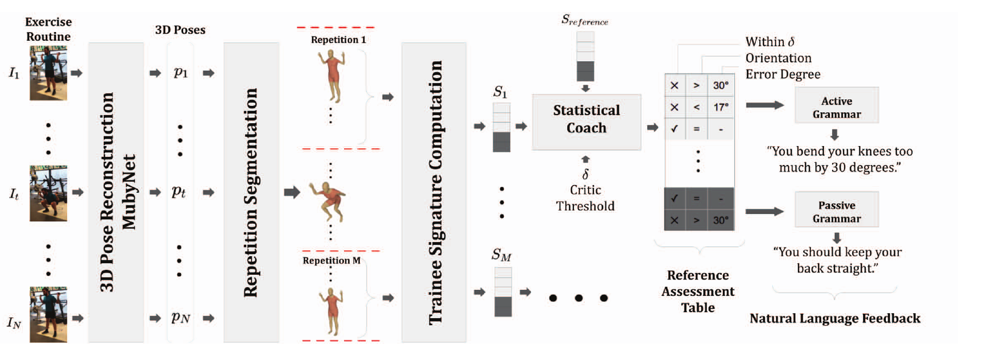

Comparing Exercise Form Feedback Systems
Brent Paterson — CS 663, Project 1
Purpose of this review
This tutorial compares six published systems that evaluate exercise form and provide feedback. The question is: what worked, what fell short, and what explains the differences? The conclusions will help guide our Project 2 mobile fitness coach.
The focus is on the systems built to judge movement and give corrections. Pose estimation supplies joint positions, but accurate joints alone do not establish accurate coaching. This review does not compare general pose estimators such as BlazePose and YOLO Pose.

The studies
- FormCoach: Lift Smarter, Not Harder — video-based language coaching. [1]
- Real-Time Feedback and Benchmark Dataset for Isometric Pose Evaluation — angle features and classifiers for held poses. [2]
- Pose Trainer: Correcting Exercise Posture Using Pose Estimation — geometric rules and movement-sequence matching. [3]
- AIFit: Automatic 3D Human-Interpretable Feedback Models for Fitness Training — statistical comparison with an instructor. [4]
- SiTrEx: Siamese Transformer for Feedback and Posture Correction on Workout Exercises — learned similarity between coach and athlete sequences. [5]
- Real-Time Posture Correction of Squat Exercise: A Deep Learning Approach for Performance Analysis and Error Correction — temporal squat classification and corrected-pose prediction. [6]
How the comparison is organized
We compare camera assumptions, simple versus temporal methods, reference matching, feedback reliability, and the strength of the evaluations. Each page ends with a conclusion supported by the studies on that page.
A reported failure, a restricted test setup, and an unanswered question are different things. This review keeps those distinctions. Because the papers measure different tasks, the largest accuracy percentage does not identify an overall winner.
Allow about 15–25 minutes to read the comparisons, work through the algorithm, inspect the diagrams, and use the three-slide activity. The bibliography provides supporting detail.